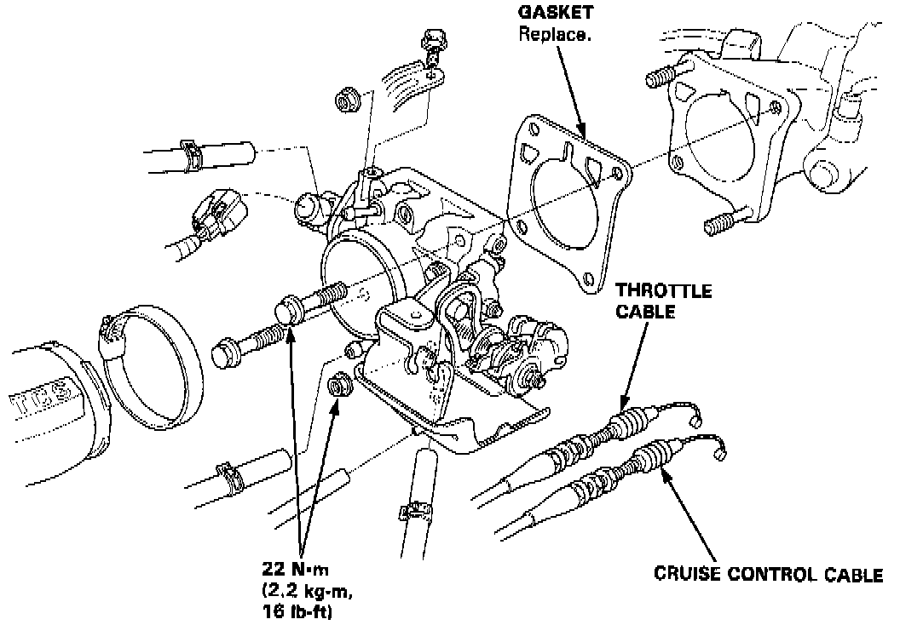
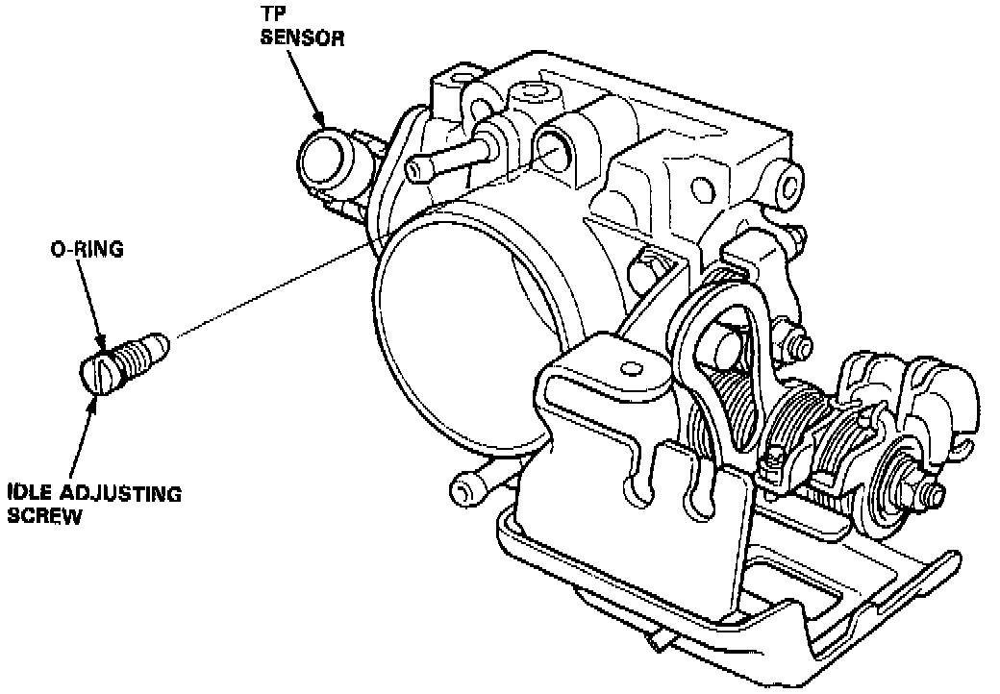

Throttle Body: Service and Repair


NOTE: With Traction Control System (TCS): Remove the TCS control valve.
1. Disconnect the evaporation control purge hose from the top of the throttle body.
2. Disconnect the air intake hose from the throttle body.
3. Remove the throttle cable from the cable bracket assembly.
4. Remove the cruise control cable from the cable bracket assembly.
5. Remove the 4 retaining nuts and carefully slide the throttle body off the insulator studs.
6. Re-assemble in reverse order.
7. Torque retaining nuts to 22 Nm (16 lb-ft).